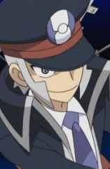
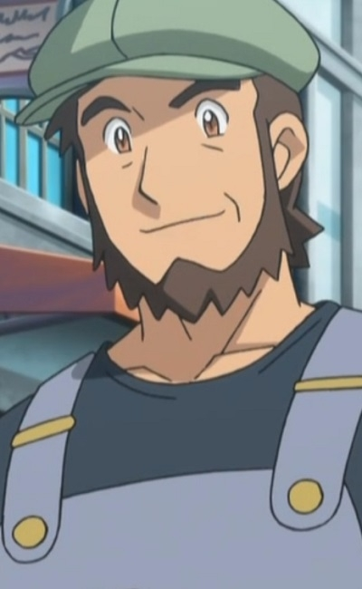

|
Charizard |
- Pokemon XY: Mega Evolution
- Pokemon XYZ
|
Charizard is a Pokemon from the Kanto region. It's the final form of Charmander. Charizard has two mega evolve forms that it can take. Its fiery breth is capable of melting boulders, massive glaciers and can cause a forest fire. Kensuke Satou voiced Alain's Charizard. |
 |
Dragonite |
- Pokemon Black and White: Rival Destinies
- Pokemon Black and White: Adventure in Unova
- Pokemon Movie 16: Genesect and The Legend Awakened
- Pokemon Black and White: Decolora Adventure
- Pokemon Best Wishes!: Iris VS. Ibuki! The Road to Become a Dragon Master!!
|
|  |
Ingo |
|
 |
Luxray |
- Pokemon XY
- Pokemon Movie 18: Hoopa and The Clash of Ages
- Pokemon XYZ
- Pokemon: Pikachu and the Pokemon Band
- Pokemon Movie 19: Volcanion and The Mechanical Marvel
|
 |
Manectric |
|
|  |
Meyer |
- Pokemon XY
- Pokemon XY Special: Road to Kalos
- Pokemon XYZ
|
 |
Staravia |
|
Staravia is a Pokemon from the Sinnoh region. Its the evolve form of Starly. Flocks of Staravia can be extremely territorial. Kensuke Satou voiced Orson's Staravia. |